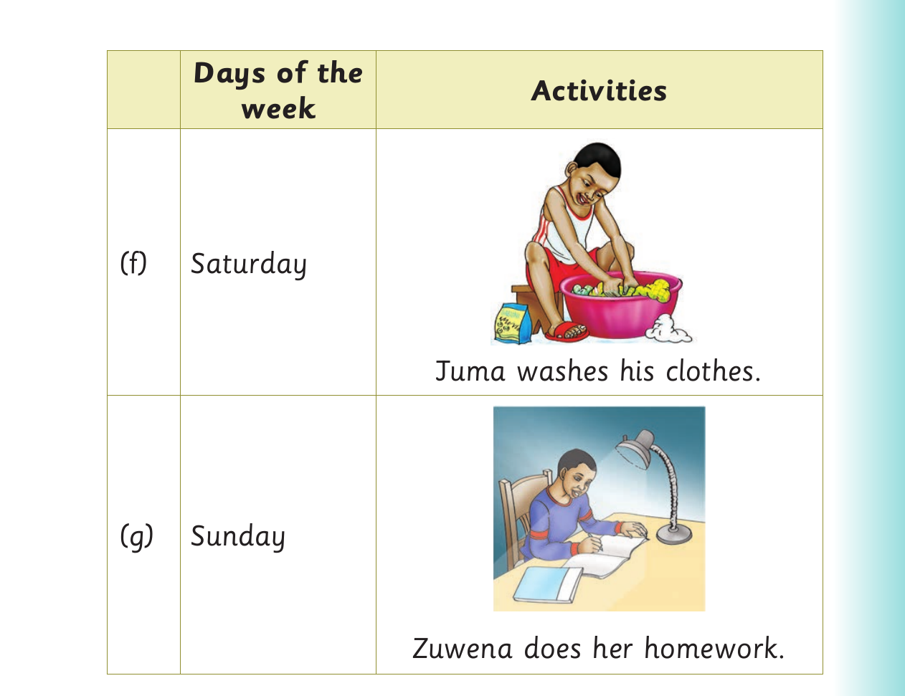
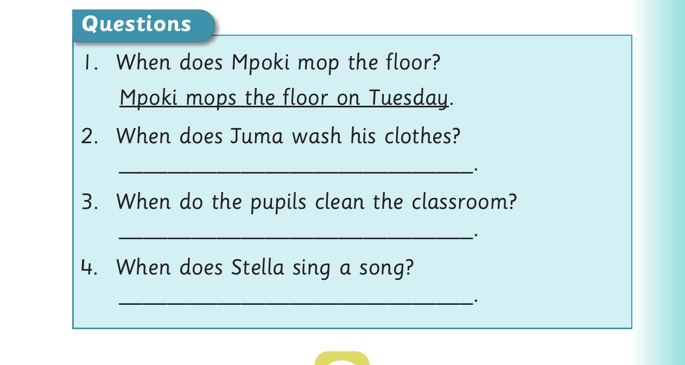

Days of the week - questions

Days of the Activities week (f) Saturday Juma washes his clothes. (g) Sunday Zuwena does her homework.

Questions 1. When does Mpoki mop the floor? Mpoki mops the floor on Tuesday . 2. When does Juma wash his clothes? _____________________________. 3. When do the pupils clean the classroom? _____________________________. 4. When does Stella sing a song? _____________________________.